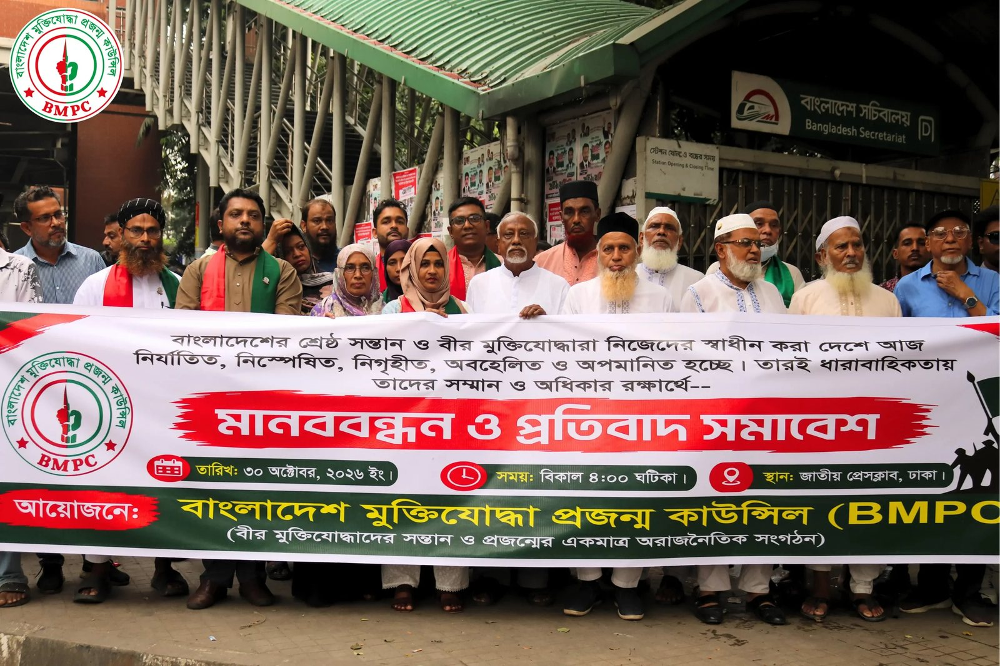
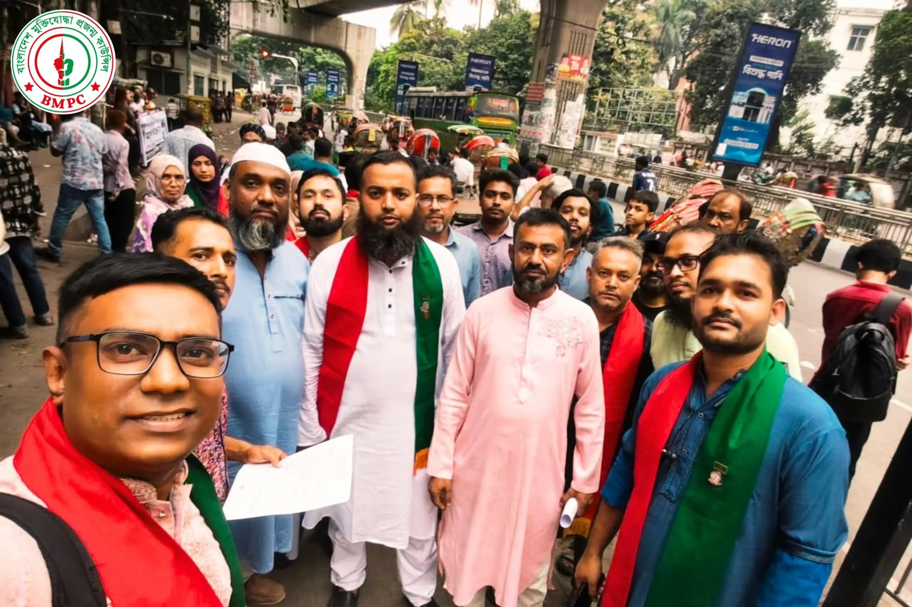
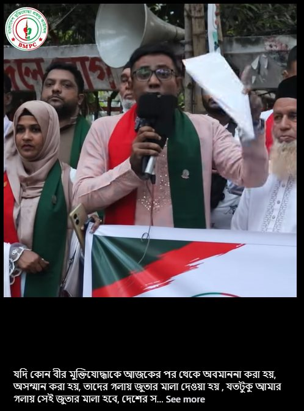

গত ৩০ অক্টোবর ২০২৬ তারিখে জাতীয় প্রেস ক্লাবে নানা প্রতিকূল পরিস্থিতি ও পুলিশের বিভিন্ন প্রশ্নের সম্মুখীন হয়েও (যদিও পুলিশ আমাদের যথেষ্ট সহযোগিতা করেছেন) আমরা নিজেদের স্বতন্ত্র ব্যানারে মহান আল্লাহর অশেষ রহমতে মানববন্ধন ও প্রতিবাদ সভার কর্মসূচি সফলভাবে সম্পন্ন করতে সক্ষম হয়েছি।
আমাদের সেই উদ্যোগের ধারাবাহিকতায় আজ দেশের বিভিন্ন প্রান্তে বীর মুক্তিযোদ্ধা ও তাঁদের সন্তানদের সংগঠনগুলো নিজ নিজ অবস্থান থেকে প্রতিবাদ ও মানববন্ধন কর্মসূচি পালন করছে। এই উদ্যোগগুলোর সঙ্গে সম্পৃক্ত সকল সংগঠন ও অংশগ্রহণকারীদের প্রতি জানাই আন্তরিক ভালোবাসা, শুভেচ্ছা ও অভিনন্দন।
বীর মুক্তিযোদ্ধারা আমাদের জাতির শ্রেষ্ঠ সন্তান। তাঁদের সম্মান, মর্যাদা ও অধিকার রক্ষায় পাশে দাঁড়ানো তাঁদের সন্তান ও পরবর্তী প্রজন্মের নৈতিক দায়িত্ব। এই দায়িত্ববোধ থেকেই আমাদের সকলের এগিয়ে আসা প্রয়োজন।
আমাদের সংগঠন হয়তো আকারে ছোট, কিন্তু আমাদের লক্ষ্য, আদর্শ ও দায়িত্ববোধের জায়গাটি দৃঢ়। আমরা বিশ্বাস করি, সংগঠনের প্রকৃত শক্তি শুধু সদস্যসংখ্যায় নয়; বরং সঠিক সময়ে সঠিক ভূমিকা পালন, সাহসিকতা, দায়িত্বশীলতা এবং আদর্শের প্রতি অবিচল থাকার মধ্যেই একটি সংগঠনের প্রকৃত পরিচয় ফুটে ওঠে।
আমরা এটাও বিশ্বাস করি, প্রতিটি সংগঠনের নিজস্ব চিন্তাধারা, মূল্যবোধ ও সাংগঠনিক স্বকীয়তা রয়েছে। তাই সবাইকে একটি ব্যানারের অধীনে আসার পরিবর্তে নিজ নিজ পরিচয় ও অবস্থান বজায় রেখে একটি অভিন্ন লক্ষ্যকে সামনে রেখে কাজ করাই অধিকতর বাস্তবসম্মত ও কার্যকর।
আমাদের প্রত্যাশা, বাংলাদেশে বীর মুক্তিযোদ্ধাদের সন্তানদের সকল সংগঠন পারস্পরিক শ্রদ্ধা, সহযোগিতা ও সৌহার্দ্য বজায় রেখে দল-মত নির্বিশেষে বীর মুক্তিযোদ্ধাদের সম্মান, মর্যাদা ও অধিকার রক্ষায় ঐক্যবদ্ধ ভূমিকা পালন করবে।
মনে রাখতে হবে, আমাদের ব্যানার ভিন্ন হতে পারে, সাংগঠনিক পরিচয় ভিন্ন হতে পারে, কিন্তু আমাদের শ্রদ্ধার জায়গা, দায়িত্ববোধ ও মূল লক্ষ্য এক—বীর মুক্তিযোদ্ধাদের পাশে থাকা।
আসুন, বিভেদ নয় সহযোগিতা, প্রতিযোগিতা নয় পারস্পরিক সম্মান এবং ব্যক্তিগত অবস্থানের ঊর্ধ্বে উঠে মুক্তিযুদ্ধের চেতনা ও বীর মুক্তিযোদ্ধাদের মর্যাদা রক্ষায় যার যার অবস্থান থেকে একসঙ্গে কাজ করি।


